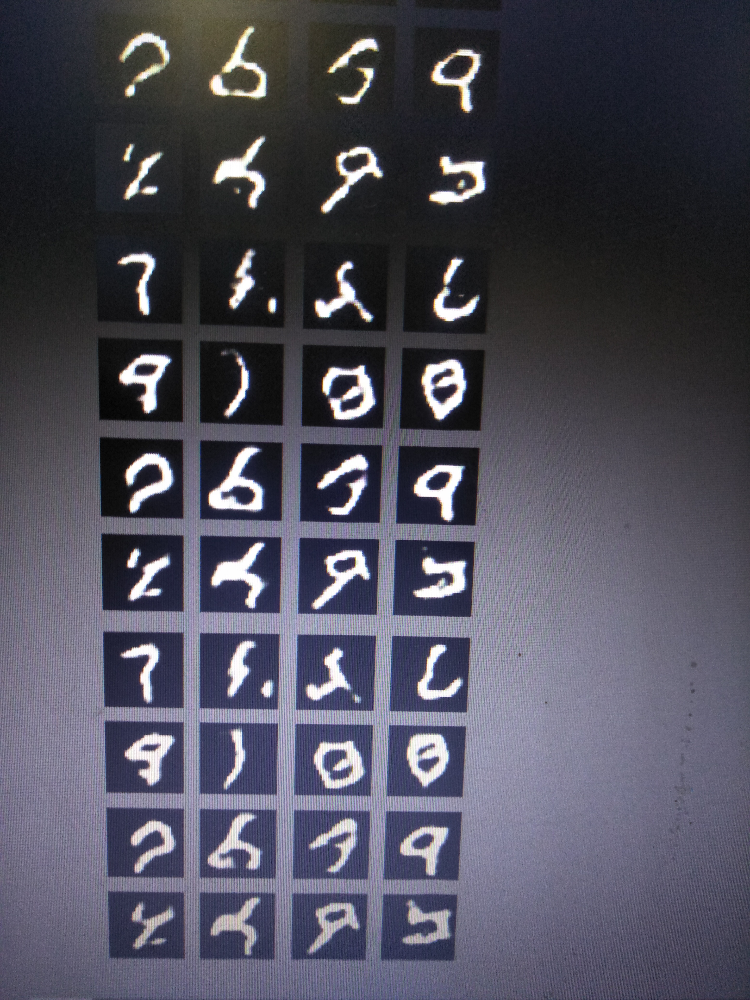

导入相关函数
1 | import tensorflow as tf |
准备数据
1 | (train_images,train_labels),(_,_)=tf.keras.datasets.mnist.load_data() |
1 | train_images.shape |
1 | train_images.dtype |
1 | train_images=train_images.reshape(train_images.shape[0],28,28,1).astype('float32') |
1 | train_images.shape |
1 | train_images.dtype |
1 | train_images=(train_images-127.5)/127.1#归一化 |
1 | BATCH_SIZE=256 |
1 | datasets=tf.data.Dataset.from_tensor_slices(train_images) |
1 | datasets |
1 | datasets=datasets.shuffle(BUFFER_SIZE).batch(BATCH_SIZE) |
1 | datasets |
搭建生成器和判别器网络
1 | class Generator_model(tf.keras.Model): |
1 | class Discriminator_model(tf.keras.Model): |
定义损失函数
1 | cross_entropy=tf.keras.losses.BinaryCrossentropy(from_logits=True) |
1 | def discriminator_loss(real_out,fake_out): |
1 | def generator_loss(fake_out): |
定义优化器
1 | generator_opt=tf.keras.optimizers.Adam(1e-4) |
设置超参数，实例化生成器和判别器
1 | EPOCHS=100 |
定义每个batch的训练过程
1 | def train_step(images_one_batch): |
定义生成图片的展示函数
1 | #将test_noise送入gen_model，以产生假图片 |
定义训练函数
1 | def train(dataset,epochs): |
开始训练
1 | train(datasets,EPOCHS) |
结果展示
